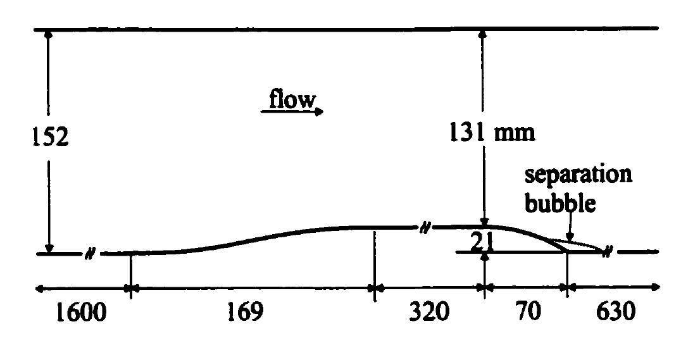

Public Access (formerly Langley Research Center)Turbulence Modeling Resource |
Exp: 2-D Rounded Backstep with Separation, Reattachment, and Recovery
Return to: Data from Experiments - Intro Page
Return to: Turbulence Modeling Resource Home PageThe data on this page were provided by
John K. Eaton.
These experimental data are for a subsonic
rounded backstep at 5 different Reynolds numbers, with separation, reattachment, and recovery.
Mach number was less than M=0.06.

Documentation for the experiment can be found in:
The data are provided in a single gzipped tar file,
which also includes a README file.
The four Reynolds numbers (given in terms of Retheta) are:
1100, 3400, 7100, 13200, and 20100.
Return to: Data from Experiments - Intro Page
Page Curators: Christopher Rumsey,
Ethan Vogel,
Clark Pederson
Last Updated: 05/11/2021